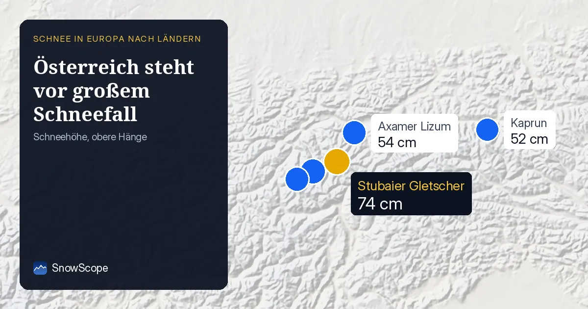

Österreich steht vor großem Schneefall: 55 cm möglich in sieben Tagen
Österreich gewann an einem Tag fast 6.000 km² Schneebedeckung, als ein Sturmsystem durchzog. Die kommende Woche sieht entscheidend aus: 55 cm sind auf höheren Lagen möglich, mit 15 cm, die allein am 23. November fallen.
Die Live-Schneeprognose für Stubaier Gletscher in der SnowScope-AppSchneehöhen, Pulverschnee-Alarme und 3D-Karte, gratis.
Großer Schneefall kommt diese Woche
Ein Sturm steuert auf die Alpen zu. Unser Modell zeigt, dass Österreich in den nächsten sieben Tagen bis zu 55 cm Neuschnee bekommen könnte, mit dem stärksten Schneefall am 23. November, wenn 15 cm vorhergesagt sind. Die drei Tage von jetzt bis 22. November könnten auf den höchsten Gipfeln 34 cm bringen.
Dies ist der Wendepunkt der Saison. Derzeit ist 48 Prozent der modellierten Skigebiete Österreichs weiß, gegenüber 30 Prozent noch vor einer Woche. Der Schnee ist in dieser Zeit von 16.000 km² auf 25.250 km² angewachsen – der schnellste Zuwachs in den letzten Wochen.
| Skigebiet | Schneehöhe | Neuschnee, 72 h | Erwartet, nächste Tage | Gipfel |
|---|---|---|---|---|
| Stubaier Gletscher | 74 cm | 16 cm | 15 cm | 3.208 m |
| Pitztaler Gletscher | 64 cm | 18 cm | 17 cm | 3.424 m |
| Kaunertaler Gletscher | 54 cm | 17 cm | 16 cm | 3.107 m |
| Axamer Lizum | 54 cm | 11 cm | 12 cm | 2.334 m |
| Kaprun | 52 cm | 10 cm | 8 cm | 3.024 m |

Wo der Schnee am stärksten fällt
Drei Regionen führen die Schneeakkumulation an. Kärnten hat in den letzten drei Tagen 31 cm erhalten, Vorarlberg 28 cm und die Ötztal-Alpen 25 cm. Dies sind die Zonen, in denen sich das Modell beim Neuschnee über die Woche am sichersten ist.
Die Gletschergebiete in Tirol bekommen das Beste davon ab. Der Stubaier Gletscher hat jetzt 74 cm nach 16 cm in den letzten drei Tagen, während der Pitztaler Gletscher bei 64 cm liegt. Beide sollten in den nächsten drei Tagen noch 15 bis 17 cm zulegen.

Die Höhe zählt jetzt
Die Schneegrenze liegt heute bei 1.300 m, noch niedrig für Mitte November. Über 2.000 m zeigt unser Modell volle Bedeckung und Tiefen von 15 cm bei 2.000 bis 2.500 m, ansteigend auf 27 cm über 2.500 m. Je höher du gehst, desto tiefer der Schnee.
Unter 1.500 m ist die Bedeckung dünn und fleckig. Nur 46 Prozent der Höhenlage von 1.000 bis 1.500 m haben Schnee, mit durchschnittlich nur 1 cm. Skifahren unter 1.200 m hängt davon ab, dass in den nächsten Tagen eine Basis aufgebaut wird oder dass ein Skigebiet diese künstlich erhält.
Wie diese Woche mit den letzten Tagen vergleicht
Gestern allein kamen 5.890 km² Schneebedeckung hinzu – ein Zuwachs, wie wir ihn seit Wochen nicht gesehen haben. Die 72-Stunden-Summe von 19 cm ist der Peak, den wir bisher in dieser Saison modelliert haben. Dies ist kein stetiger Anstieg; es ist ein Sprung.
Vor vier Tagen führte Kaprun mit 83 cm. Heute hat der Stubaier Gletscher mit 74 cm die Spitzenposition übernommen. Die Gletschergebiete sortieren sich nach Höhe und Lage, während sich dieses Sturmsystem einnistet. Beobachte die höchsten Gipfel: hier werden die Zuwächse weiterhin stattfinden.
Was nach dem Sturm kommt
Die erste Dezemberwoche sieht ruhiger aus. Unser Modell sagt maximal 15 cm für den Zeitraum 27. November bis 3. Dezember voraus – ein starker Rückgang gegenüber der Intensität dieser Woche. Das Hauptereignis ist jetzt, nicht später.
Gletscher versus tiefere Skigebiete
Der Unterschied zwischen den Gletschern und den tieferen Tälern wächst. Der Stubaier Gletscher auf 3.208 m ist 20 cm tiefer als die Axamer Lizum auf 2.334 m, obwohl die Axamer Lizum in der gleichen Region liegt. Bis 22. November wird sich diese Lücke vergrößern. Wenn du in der nächsten Woche wählen kannst, wo du fahren möchtest, ist die Höhe dein bester Freund.
Tipps für Skifahrer
- Ziele in den nächsten drei Tagen Höhenlagen über 2.000 m an. Das Modell zeigt volle Schneebedeckung und Tiefen, die sich täglich verbessern. Gletscher und hohe Gipfel sind deine sicherste Option.
- Beobachte den 23. November genau. Das ist der Tag, an dem der stärkste einzelne Schneefall vorhergesagt ist – 15 cm. Plane dein Timing um diesen Termin, wenn du kannst.
- Kärnten, Vorarlberg und die Ötztal-Alpen bekommen das meiste Schnee. Wenn du Flexibilität hast, liegen diese Regionen über dem österreichischen Durchschnitt.
- Bevor du abseits der Piste fährst, prüfe den amtlichen Lawinenbericht. Neuschnee in dieser Menge stellt immer die Frage nach der Stabilität. Frühjahrschnee auf dünnem Untergrund kann rutschen.
- Tiefere Lagen sind noch marginal. Unter 1.500 m rechne nicht damit, dass genug zum Skifahren da ist. Die Auftaulinie auf 1.300 m wird sich nur langsam im Laufe der Woche nach oben verschieben.
Zu diesen Zahlen
Die Schneehöhen der Skigebiete sind der meiste Schnee in den oberen Hängen laut SnowScope-Schneemodell (etwa 1 km, Lauf vom 19. November); es sind Schätzungen für eine Fläche, keine Messung an einem Punkt. Werte von Messstationen sind Messungen am angegebenen Tag. Prognosen können sich ändern. Lies vor dem Freeriden immer den offiziellen Lawinenlagebericht.
Diesen Bericht zitieren
Für Forschung, Lehre oder Presse: Zahlen und Grafiken sind unter CC BY 4.0 mit dieser Quellenangabe frei nutzbar.
SnowScope (2026), Österreich steht vor großem Schneefall: 55 cm möglich in sieben Tagen, https://snowscope.app/blog/de/2026/11/austria-snow-on-the-way-19-november-2026.html, abgerufen am 2026-11-19
SnowScope (Atlas Labs). (2026, November 19). Österreich steht vor großem Schneefall: 55 cm möglich in sieben Tagen. SnowScope snow reports. https://snowscope.app/blog/de/2026/11/austria-snow-on-the-way-19-november-2026.html
BibTeX
@misc{snowscope2026austriasnowontheway19nov,
author = {{SnowScope (Atlas Labs)}},
title = {Österreich steht vor großem Schneefall: 55 cm möglich in sieben Tagen},
year = {2026},
month = nov,
howpublished = {\url{https://snowscope.app/blog/de/2026/11/austria-snow-on-the-way-19-november-2026.html}},
note = {Published 2026-11-19 12:38 UTC; accessed 2026-11-19}
}· CC BY 4.0 · Methoden, Daten und Werkzeuge →
Stubaier Gletscher: Schnee und Temperatur nach Höhe, dieser Winter vs letzter (Werkzeuge) →
Stubaier Gletscher folgen
Gratis: eine Nachricht, wenn Neuschnee kommt, und jeden Morgen die Vorhersage.